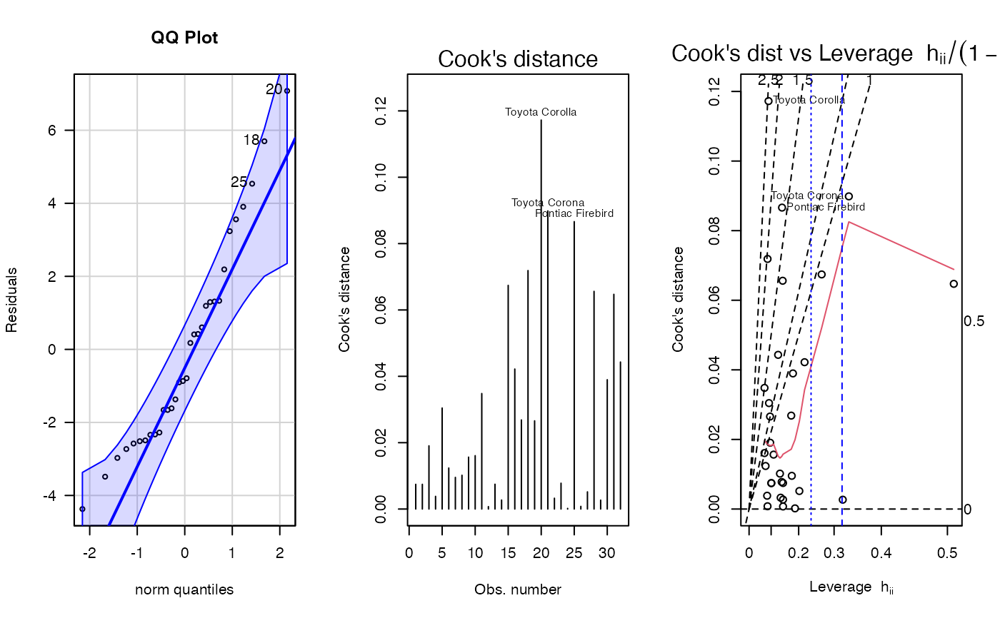
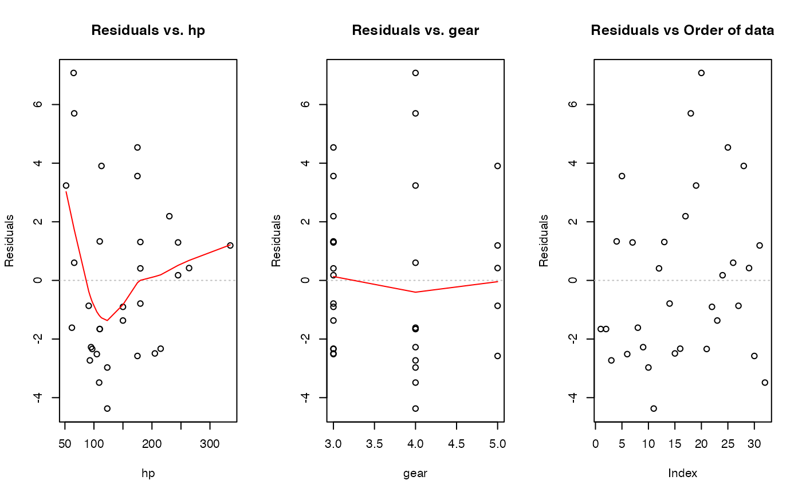
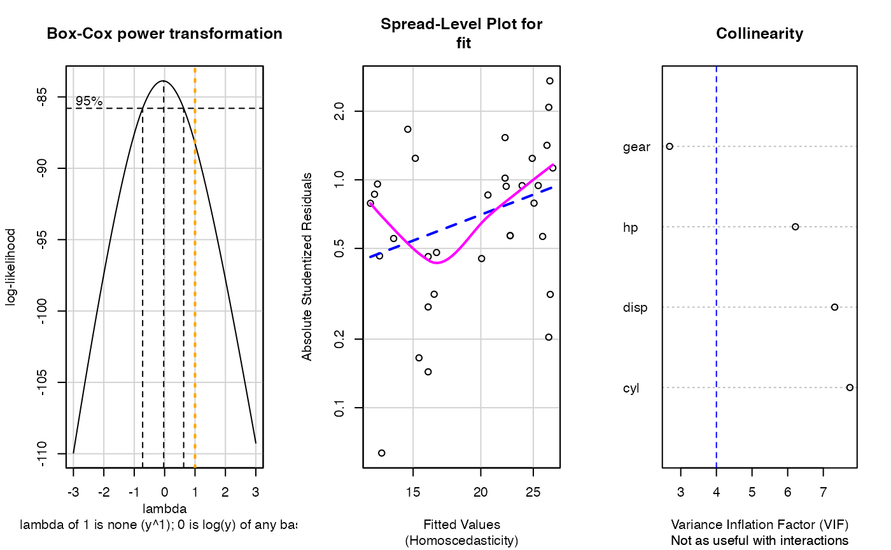
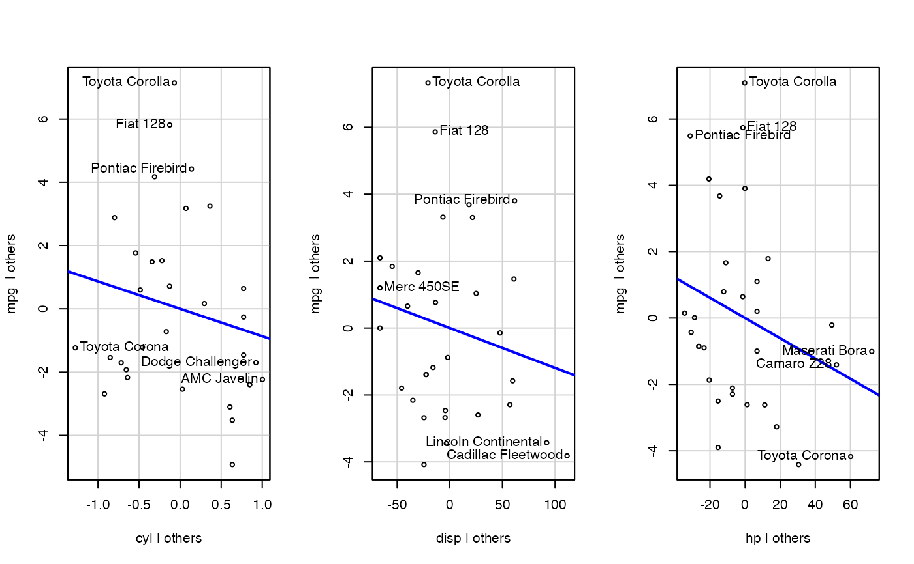
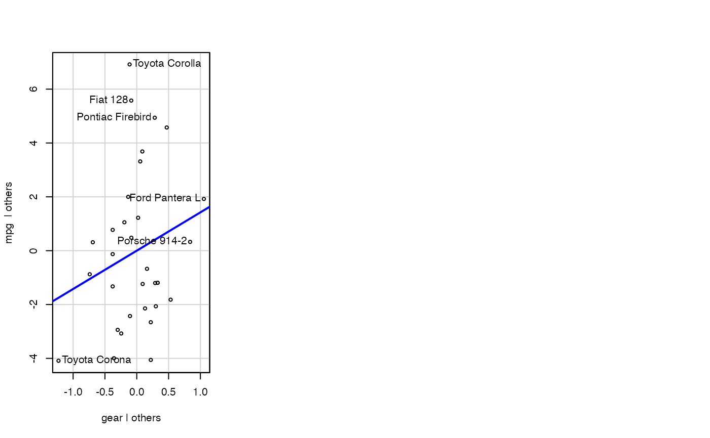
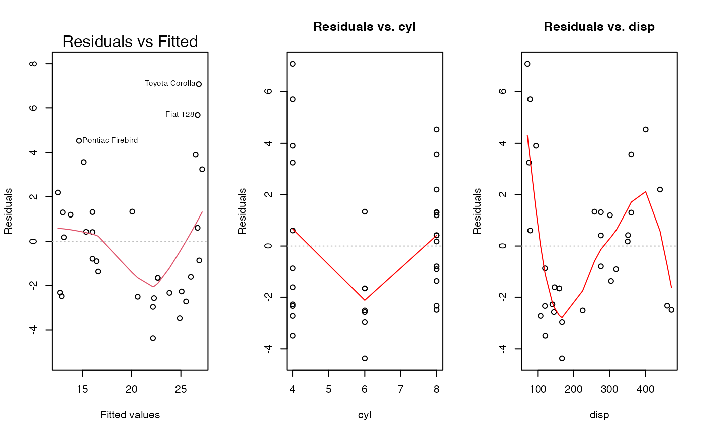
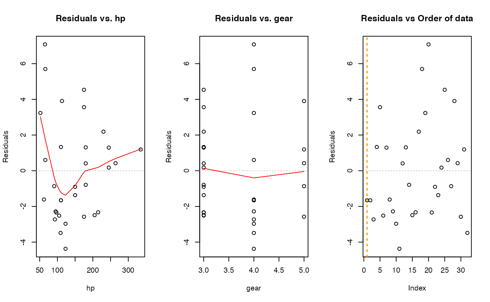
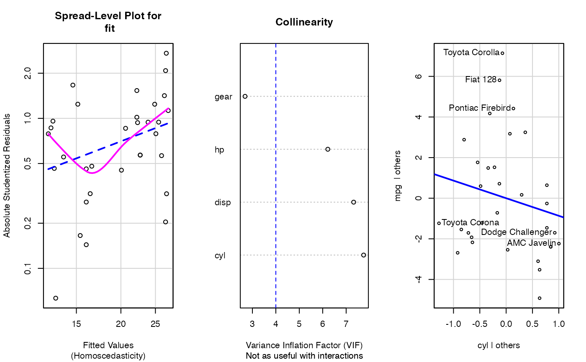
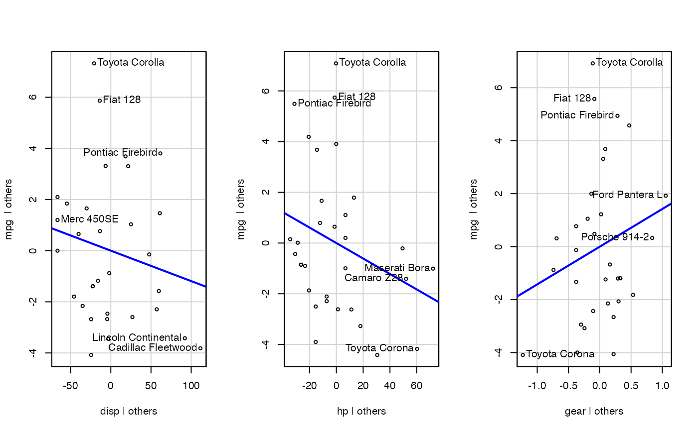

Plotting residual diagnostics for an lm() object.
e_lm_diag_plots( fit = NULL, rc_mfrow = c(1, 3), which_plot = c(4, 6, 1), n_outliers = 3, sw_qqplot = TRUE, sw_boxcox = TRUE, sw_constant_var = TRUE, sw_collinearity = TRUE, sw_order_of_data = TRUE, sw_addedvar = TRUE, sw_plot_set = c(NA, "simple", "simpleAV", "all")[1] )
Arguments
| fit | linear model object returned by lm() |
|---|---|
| rc_mfrow | number of rows and columns for the graphic plot, default is c(1, 3); use "NA" for a single plot with 3 columns |
| which_plot | default plot numbers for lm() |
| n_outliers | number to identify in plots from lm() and qqPlot() |
| sw_qqplot | T/F for whether to show the QQ-plot |
| sw_boxcox | T/F for whether to show Box-Cox transformation |
| sw_constant_var | T/F for whether to assess constant variance |
| sw_collinearity | T/F for whether to assess multicollinearity between predictor variables |
| sw_order_of_data | T/F for whether to show residuals by order of data |
| sw_addedvar | T/F for whether to show added-variables plot |
| sw_plot_set | NULL to accept other plot options, or "simple" to exclude boxcox, constant var, collinearity, order of data, and added-variable plots. "simpleAV" to add back in the added-variable plots. "all" includes all possible plots in this function. |
Value
NULL, invisibly
Examples
#> Non-constant Variance Score Test #> Variance formula: ~ fitted.values #> Chisquare = 3.921921, Df = 1, p = 0.04766#> Warning: Note: Collinearity plot unreliable for predictors that also have interactions in the model.mod <- formula(mpg ~ cyl + disp + hp + gear) fit <- lm(mod, data = datasets::mtcars) e_lm_diag_plots(fit)#> Error : object of type 'builtin' is not subsettable #> Non-constant Variance Score Test #> Variance formula: ~ fitted.values #> Chisquare = 3.921921, Df = 1, p = 0.04766#> Warning: Note: Collinearity plot unreliable for predictors that also have interactions in the model.